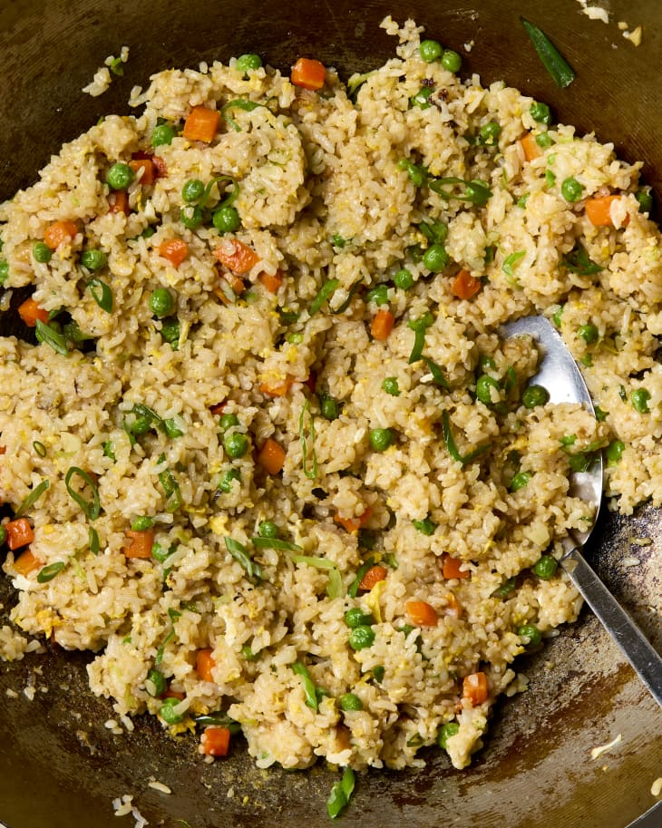

Home
Fried Rice

Fried Rice
Ingredients
- 3 Cloves of garlic
- 2 Medium Scallions
- 2 tablespoons plus 1 teaspoon vegetable oil, divided
- 1 Cup Frozen peas and Carrots
- 4 cups of cooked brown or white rice
- 2 Tabelspooons soy sauce
- salt
- 2 eggs
- Sesame oil
How to Make
- MAKE AHEAD Cook the rice up to 1 day ahead and refrigerate.
- Mince 3 garlic cloves. Thinly slice 2 medium scallions crosswise on a slight diagonal, keeping the white parts separate from the light and dark green parts.
- Heat 2 tablespoons of the vegetable oil in a large wok or nonstick frying pan over medium-high heat until shimmering. Add the garlic, scallion whites, and 1 cup frozen peas and carrots. Stir-fry until the carrots and peas are thawed, about 2 minutes.
- Add 4 cups cold cooked rice, breaking up any clumps of rice with your fingers as you add it in. Toss to combine with the peas and carrots. Add 1 tablespoon soy sauce, 1 1/2 teaspoons kosher salt, and 3/4 teaspoon ground white pepper. Stir to combine.
- Push the fried rice to one side of the pan. Add the remaining 1 teaspoon vegetable oil to the now-empty side of the pan, then crack 2 large eggs into the oil. Scramble into fluffy curds until almost set.
- Turn off the heat and stir the eggs into the fried rice, breaking up any large pieces of egg. Drizzle with 3/4 teaspoon toasted sesame oil and toss to combine. Taste and season with more kosher salt and white pepper as needed. Garnish with the reserved scallion greens.